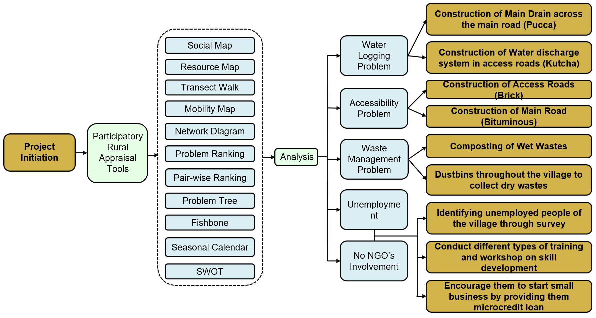

Authors
Nushrat Nureen, Saima Sekander Raisa, K. A. Kakon, Md. Ashhab Sadiq, Mustari Jahan, Aminul Islam Rajon, B. K. Saha
Aim
To identify community issues and develop participatory planning solutions using PRA methods.
Summary
This study applied PRA tools to identify the key socio-economic and environmental issues in Dakatia village. Through social mapping, transect walks, and community consultations, the study identified waterlogging, poor accessibility, and limited waste management as primary challenges. Collaborative planning sessions with villagers generated sustainable, low-cost solutions for drainage, road improvement, and local employment generation.
Study Area

Methodology
- Selection of rural study area (Dakatia village).
- Field visits and stakeholder engagement.
- PRA tools: Social map, resource map, transect walk, mobility map, pair-wise ranking, problem tree, fishbone diagram, SWOT analysis.
- Community problem prioritization through participatory ranking.
- Development of proposed solutions based on villagers’ inputs.

Key Findings (Community & Physical Aspects)
- Waterlogging & Drainage: Identified as the most critical issue. Poor connectivity between the Dakatia Khal and the Shiromoni drain causes recurring flooding.
- Accessibility: Main and access roads are kutcha and poorly maintained, restricting mobility.
- Resource Use: Shrimp farming dominates livelihood; agriculture and livestock are secondary.
- Waste Management: No formal waste disposal; households rely on open dumping.

Proposed Solutions
- Drainage: Reconstructed 1.53 km pucca drain linking Dakatia Khal with Shiromoni drain to reduce waterlogging.
- Roads: Upgraded main road (bituminous) and access roads (brick) to improve local connectivity.
- Waste Management: Community waste segregation with compost pits and bins for wet and dry waste.
- Farming System: Introduced shrimp–paddy rotation, homestead gardening, and livestock rearing for diversified income.
- Integrated Outcome: Combined interventions strengthen drainage, mobility, sanitation, and livelihood resilience through participatory planning.